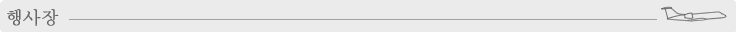
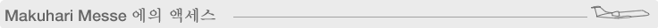
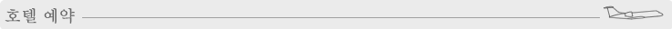

Makuhari Messe (Chiba-city, Japan)
http://www.m-messe.co.jp/index_e.html

| 전철 | JR Keiyo Line·Kaihin Makuhari역 하차, Tokyo역으로부터 약 30분 |
|---|---|
| 버스 | 나리타 공항으로부터 약 30분 하네다 공항으로부터 약 40분 Makuhari Hongo역으로부터 약 15분 |
자세한 것은 이쪽을 봐 주세요,
http://www.m-messe.co.jp/access_e.html

자세한 것은 이쪽을 봐 주세요,
https://apollon.nta.co.jp/tgs2008/